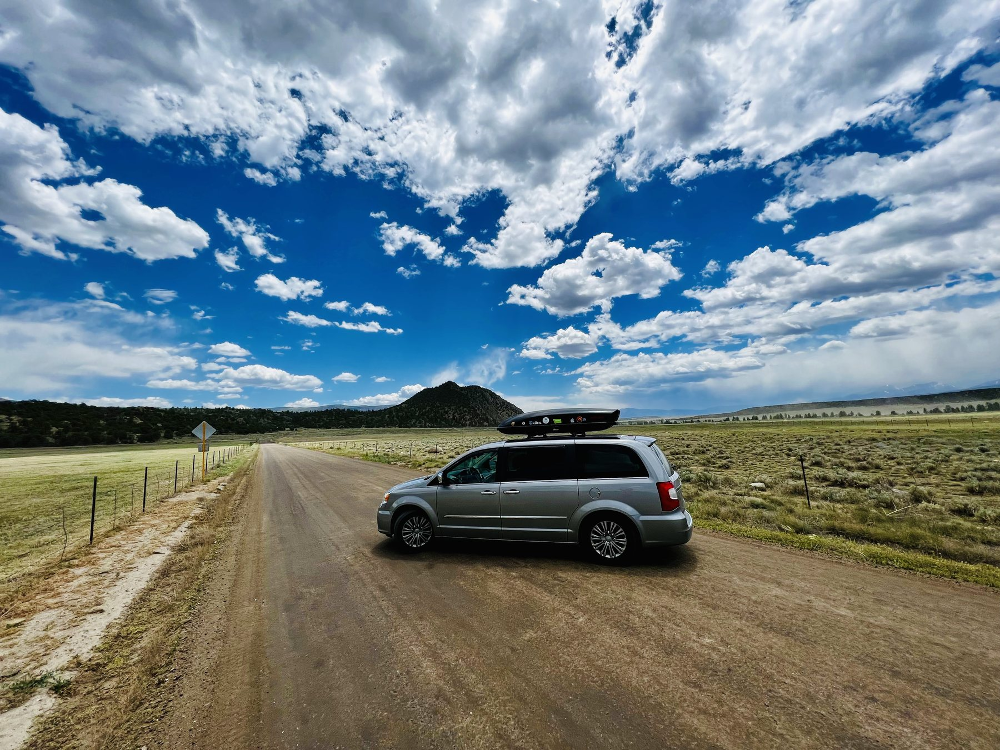

Cassie and David • PourHouse
Taking the long way.
We stopped waiting for the right time. Now we travel slowly, wander deliberately, and share what happens when the road becomes home.
From the field notes
The long way became the point.
A Prius, a homemade minivan camper, and now PourHouse. Every expedition taught us how little we needed—and how much more there was to see.

Pacific Coast Highway Expedition
Our first coast-to-coast journey completed the U.S. Pacific Coast, then carried us east to Miami.

The van became a home.
Heat, altitude, wildlife, detours—and proof that the experiment worked.

Mighty V Passage
A Prius V, four Utah parks, and the first miles of a new life.

Southern Colorado Expedition
A full-scale model for long travel and off-grid life.

The Transcontinental Odyssey
Key West to Deadhorse. The biggest chapter yet.


Why we wander
We no longer vacation.
A vacation is a break from routine. We shredded routine.
We were business professionals with big careers, big responsibilities, and big headaches. We expected to work well into our sixties. Then a summer break and a cancer diagnosis changed the horizon. We kept moving without a grand plan—and built freedom as we saw it.